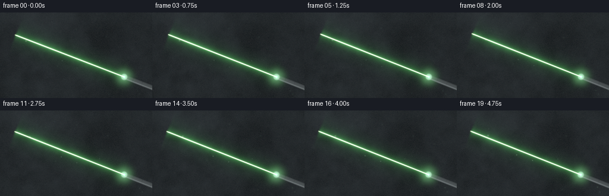
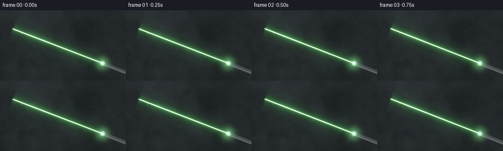
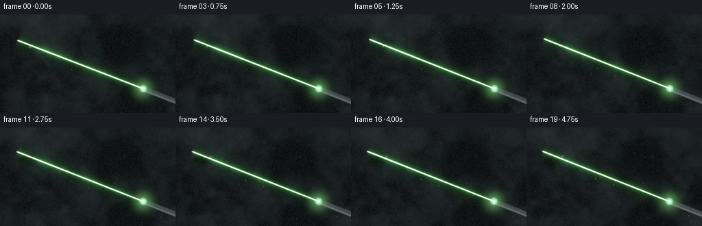
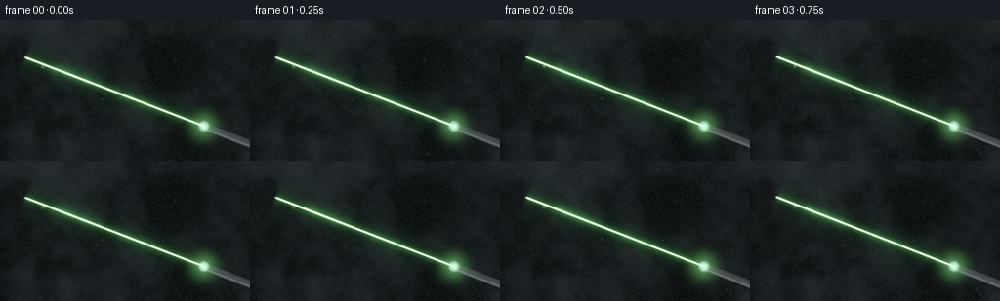

CODING AGENTS AS PIXEL WORLD MODELS
traex/DeepSeek-V4.1-Flash · phygen_053
点击播放 · 原生 RGB 像素
逐轮保存的候选
回放视频、检查图与代码变化。
每份候选均可单独播放。实际图片检查记录在下方工具轨迹中。
候选 01播放与检查图
点击播放 · 原生 RGB 像素


展开代码变化
--- 上一保存版本
+++ 本次保存版本
@@ -0,0 +1,338 @@
+"""Procedural smoke-and-laser scene for PixelWorld."""
+
+from pathlib import Path
+
+import numpy as np
+from PIL import Image, ImageFilter
+
+import artifact_io
+
+
+CASE_DIR = Path(__file__).resolve().parent
+WIDTH, HEIGHT = 256, 144
+FRAMES, FPS = 20, 4
+SUPERSAMPLE = 2
+RW, RH = WIDTH * SUPERSAMPLE, HEIGHT * SUPERSAMPLE
+
+
+def _noise_tile(seed: int, size: int = 64) -> np.ndarray:
+ rng = np.random.default_rng(seed)
+ return rng.normal(0.0, 1.0, (size, size)).astype(np.float32)
+
+
+TILES = [_noise_tile(1009 + i * 7919) for i in range(12)]
+
+
+def _smoothstep(value: np.ndarray, low: float, high: float) -> np.ndarray:
+ x = np.clip((value - low) / (high - low), 0.0, 1.0)
+ return x * x * (3.0 - 2.0 * x)
+
+
+def _sample_tile(tile: np.ndarray, x: np.ndarray, y: np.ndarray) -> np.ndarray:
+ """Bilinearly sample a wrapping random lattice with smooth interpolation."""
+ size = tile.shape[0]
+ x0 = np.floor(x).astype(np.int32)
+ y0 = np.floor(y).astype(np.int32)
+ fx = x - x0
+ fy = y - y0
+ fx = fx * fx * (3.0 - 2.0 * fx)
+ fy = fy * fy * (3.0 - 2.0 * fy)
+ x0 %= size
+ y0 %= size
+ x1 = (x0 + 1) % size
+ y1 = (y0 + 1) % size
+ top = tile[y0, x0] * (1.0 - fx) + tile[y0, x1] * fx
+ bottom = tile[y1, x0] * (1.0 - fx) + tile[y1, x1] * fx
+ return top * (1.0 - fy) + bottom * fy
+
+
+def _fbm(
+ x: np.ndarray,
+ y: np.ndarray,
+ base_scale: float,
+ octaves: int,
+ seed: int,
+) -> np.ndarray:
+ value = np.zeros_like(x, dtype=np.float32)
+ amplitude = 1.0
+ total = 0.0
+ scale = base_scale
+ for octave in range(octaves):
+ tile = TILES[(seed + octave * 3) % len(TILES)]
+ value += amplitude * _sample_tile(tile, x / scale, y / scale)
+ total += amplitude
+ amplitude *= 0.52
+ scale *= 0.5
+ return value / total
+
+
+def _smoke_field(t: float) -> np.ndarray:
+ yy, xx = np.mgrid[0:RH, 0:RW].astype(np.float32)
+
+ # Slow advection plus a gentle shear gives the haze layered, curling motion.
+ drift_x = 11.0 * t + 3.5 * np.sin(0.38 * t)
+ drift_y = -4.5 * t
+ shear = 8.0 * np.sin(yy / 43.0 + 0.35 * t)
+ broad = _fbm(
+ xx + 0.55 * drift_x + shear,
+ yy + 0.45 * drift_y,
+ 92.0,
+ 5,
+ 0,
+ )
+ detail = _fbm(
+ xx + 1.25 * drift_x + 11.0 * np.sin(yy / 29.0 - 0.48 * t),
+ yy + 1.5 * drift_y + 6.0 * np.cos(xx / 57.0 + 0.22 * t),
+ 48.0,
+ 5,
+ 4,
+ )
+ veil = _fbm(
+ xx + 1.8 * drift_x - 7.0 * np.cos(yy / 35.0 + 0.17 * t),
+ yy + 2.0 * drift_y,
+ 26.0,
+ 4,
+ 8,
+ )
+
+ broad_density = 0.5 + 0.5 * np.tanh(0.82 * broad)
+ detail_density = 0.5 + 0.5 * np.tanh(0.72 * detail)
+ veil_density = 0.5 + 0.5 * np.tanh(0.65 * veil)
+ density = 0.57 * broad_density + 0.30 * detail_density + 0.13 * veil_density
+
+ # Dense lower haze and a thinner upper region make the volume feel deep.
+ height_bias = 0.82 + 0.18 * _smoothstep(yy / RH, 0.12, 0.94)
+ edge_softness = 0.92 + 0.08 * np.sin(xx / 71.0 + 0.12 * t)
+ density = np.clip(density * height_bias * edge_softness, 0.0, 1.0)
+ return density.astype(np.float32)
+
+
+def _segment_distance(
+ xx: np.ndarray,
+ yy: np.ndarray,
+ start: tuple[float, float],
+ end: tuple[float, float],
+) -> tuple[np.ndarray, np.ndarray]:
+ sx, sy = start
+ ex, ey = end
+ vx, vy = ex - sx, ey - sy
+ length2 = vx * vx + vy * vy
+ projection = ((xx - sx) * vx + (yy - sy) * vy) / length2
+ px = sx + projection * vx
+ py = sy + projection * vy
+ distance = np.hypot(xx - px, yy - py)
+ return distance, projection
+
+
+def _draw_pointer(
+ rgb: np.ndarray,
+ xx: np.ndarray,
+ yy: np.ndarray,
+ start: tuple[float, float],
+ end: tuple[float, float],
+) -> None:
+ """Composite a compact graphite pointer body entering from the right edge."""
+ sx, sy = start
+ ex, ey = end
+ beam_len = np.hypot(ex - sx, ey - sy)
+ ux, uy = (ex - sx) / beam_len, (ey - sy) / beam_len
+ vx, vy = -uy, ux
+ rx, ry = xx - sx, yy - sy
+ behind = -(rx * ux + ry * uy)
+ across = rx * vx + ry * vy
+
+ body_length = 122.0
+ half_width = 8.0
+ body = (behind >= 0.0) & (behind <= body_length) & (np.abs(across) <= half_width)
+ body_soft = (
+ _smoothstep(behind, -1.5, 1.5)
+ * (1.0 - _smoothstep(behind, body_length - 2.0, body_length + 1.0))
+ * (1.0 - _smoothstep(np.abs(across), half_width - 1.2, half_width + 0.8))
+ )
+
+ across_n = across / half_width
+ top_light = np.exp(-((across + 4.3) / 1.5) ** 2)
+ lower_fill = 0.35 * np.exp(-((across - 3.8) / 3.0) ** 2)
+ groove = (
+ np.exp(-((behind - 31.0) / 1.1) ** 2)
+ + 0.75 * np.exp(-((behind - 64.0) / 1.2) ** 2)
+ + 0.55 * np.exp(-((behind - 97.0) / 1.0) ** 2)
+ )
+ body_shade = (
+ 0.025
+ + 0.045 * (1.0 - np.clip(across_n, 0.0, 1.0))
+ + 0.13 * top_light
+ + 0.035 * lower_fill
+ - 0.016 * groove
+ )
+ body_shade *= body_soft
+ rgb[..., 0] += body_shade * 0.78
+ rgb[..., 1] += body_shade * 0.90
+ rgb[..., 2] += body_shade * 0.92
+
+ # Silver bezel and the intensely lit green lens sit over the body's front cap.
+ radius = np.hypot(rx, ry)
+ bezel = np.exp(-((radius - 8.2) / 1.35) ** 2)
+ outer_lip = np.exp(-((radius - 10.4) / 1.0) ** 2)
+ lens = np.exp(-(radius / 5.0) ** 4)
+ lens_core = np.exp(-(radius / 2.3) ** 2)
+ rgb[..., 0] += 0.23 * bezel + 0.07 * outer_lip + 0.08 * lens
+ rgb[..., 1] += 0.30 * bezel + 0.10 * outer_lip + 0.58 * lens + 2.7 * lens_core
+ rgb[..., 2] += 0.29 * bezel + 0.10 * outer_lip + 0.16 * lens + 1.4 * lens_core
+
+
+def _dust_motes(
+ rgb: np.ndarray,
+ t: float,
+ start: tuple[float, float],
+ end: tuple[float, float],
+) -> None:
+ rng = np.random.default_rng(918273)
+ count = 34
+ x0 = rng.uniform(0.0, RW, count)
+ y0 = rng.uniform(0.0, RH, count)
+ vx = rng.uniform(-3.2, 5.2, count)
+ vy = rng.uniform(-4.0, 1.8, count)
+ phase = rng.uniform(0.0, 2.0 * np.pi, count)
+ size = rng.uniform(0.8, 2.0, count)
+ power = rng.uniform(0.3, 1.0, count)
+
+ for index in range(count):
+ px = (x0[index] + vx[index] * t + 2.3 * np.sin(phase[index] + 0.75 * t)) % RW
+ py = (y0[index] + vy[index] * t + 1.7 * np.cos(phase[index] + 0.55 * t)) % RH
+ distance, _ = _segment_distance(
+ np.asarray([px], dtype=np.float32),
+ np.asarray([py], dtype=np.float32),
+ start,
+ end,
+ )
+ beam_reach = float(np.exp(-(distance[0] / 18.0) ** 2))
+ splat = np.exp(
+ -(
+ ((np.arange(RW, dtype=np.float32)[None, :] - px) ** 2)
+ + ((np.arange(RH, dtype=np.float32)[:, None] - py) ** 2)
+ )
+ / (2.0 * size[index] ** 2)
+ )
+ intensity = power[index] * (0.012 + 0.33 * beam_reach)
+ green = 0.32 + 0.68 * beam_reach
+ rgb[..., 0] += splat * intensity * (0.30 + 0.45 * green)
+ rgb[..., 1] += splat * intensity * (0.55 + 0.70 * green)
+ rgb[..., 2] += splat * intensity * (0.55 + 0.20 * green)
+
+
+def _render_frame(frame_index: int) -> np.ndarray:
+ t = frame_index / FPS
+ yy, xx = np.mgrid[0:RH, 0:RW].astype(np.float32)
+ smoke = _smoke_field(t)
+
+ # Hand-held pointer: the source is nearly steady while the far spot drifts.
+ source = (
+ 417.0 + 0.65 * np.sin(0.82 * t + 0.4),
+ 216.0 + 0.55 * np.sin(1.03 * t + 1.1),
+ )
+ target = (
+ 50.0 + 3.2 * np.sin(1.05 * t + 0.35) + 1.1 * np.sin(2.2 * t),
+ 72.0 + 2.6 * np.sin(0.78 * t + 1.7) + 0.8 * np.cos(1.9 * t),
+ )
+
+ # Soft cool ambient light reveals the smoke without competing with the beam.
+ ambient_pool = np.exp(
+ -(
+ ((xx - 0.18 * RW) / (0.52 * RW)) ** 2
+ + ((yy - 0.08 * RH) / (0.48 * RH)) ** 2
+ )
+ )
+ ambient = 0.010 + 0.035 * smoke**1.22 + 0.020 * ambient_pool * smoke
+ haze_tint = np.stack(
+ (
+ ambient * 0.56,
+ ambient * 0.72,
+ ambient * 0.82,
+ ),
+ axis=-1,
+ ).astype(np.float32)
+ rgb = haze_tint
+
+ distance, projection = _segment_distance(xx, yy, source, target)
+ segment_gate = _smoothstep(projection, -0.005, 0.018) * (
+ 1.0 - _smoothstep(projection, 0.982, 1.008)
+ )
+ divergence = 1.0 + 0.10 * np.clip(projection, 0.0, 1.0)
+ pulse = 0.965 + 0.035 * np.sin(2.35 * t + 0.7)
+ scattered = 0.28 + 1.35 * smoke**1.35
+
+ core = np.exp(-((distance / (1.18 * divergence)) ** 2)) * segment_gate
+ inner_glow = np.exp(-((distance / (3.4 * divergence)) ** 2)) * segment_gate
+ near_haze = np.exp(-((distance / (12.5 * divergence)) ** 2)) * segment_gate
+ wide_haze = np.exp(-((distance / (36.0 * divergence)) ** 2)) * segment_gate
+
+ core_power = pulse * core * (4.8 + 2.6 * smoke**1.1)
+ green_power = (
+ pulse
+ * scattered
+ * (0.46 * inner_glow + 0.18 * near_haze + 0.035 * wide_haze)
+ )
+ rgb[..., 0] += core_power * 0.66 + green_power * 0.10
+ rgb[..., 1] += core_power * 1.00 + green_power * 0.78
+ rgb[..., 2] += core_power * 0.50 + green_power * 0.13
+
+ # A small source bloom bridges the beam into the pointer's lens.
+ source_radius2 = (xx - source[0]) ** 2 + (yy - source[1]) ** 2
+ source_bloom = np.exp(-source_radius2 / (2.0 * 15.0**2))
+ source_flare = np.exp(-source_radius2 / (2.0 * 4.2**2))
+ rgb[..., 0] += 0.10 * source_bloom + 0.55 * source_flare
+ rgb[..., 1] += 0.33 * source_bloom + 1.80 * source_flare
+ rgb[..., 2] += 0.12 * source_bloom + 0.72 * source_flare
+
+ _dust_motes(rgb, t, source, target)
+ _draw_pointer(rgb, xx, yy, source, target)
+
+ # Gentle vignette and a stable fine grain keep the dark haze from banding.
+ nx = xx / (RW - 1.0) - 0.5
+ ny = yy / (RH - 1.0) - 0.5
+ vignette = np.clip(1.0 - 0.42 * (nx * nx + 1.35 * ny * ny), 0.52, 1.0)
+ rgb *= vignette[..., None]
+ grain_rng = np.random.default_rng(4400 + frame_index)
+ grain = grain_rng.normal(0.0, 0.0028, (RH, RW, 1)).astype(np.float32)
+ rgb = np.maximum(rgb + grain, 0.0)
+
+ # Filmic soft shoulder retains a white-hot beam core without clipping the haze.
+ display = 1.0 - np.exp(-1.18 * rgb)
+ display = np.power(np.clip(display, 0.0, 1.0), 1.0 / 2.2)
+ return np.clip(display * 255.0 + 0.5, 0, 255).astype(np.uint8)
+
+
+def _add_bloom(frame: np.ndarray) -> np.ndarray:
+ image = Image.fromarray(frame, mode="RGB")
+ bright = frame.astype(np.float32) / 255.0
+ luminance = (
+ 0.2126 * bright[..., 0] + 0.7152 * bright[..., 1] + 0.0722 * bright[..., 2]
+ )
+ glow_mask = np.clip((luminance - 0.58) / 0.42, 0.0, 1.0)
+ glow_source = (bright * glow_mask[..., None] * 255.0).astype(np.uint8)
+ glow = Image.fromarray(glow_source, mode="RGB").filter(
+ ImageFilter.GaussianBlur(radius=4.0)
+ )
+ bloom = np.asarray(glow, dtype=np.float32) / 255.0
+ combined = np.clip(bright + 0.24 * bloom, 0.0, 1.0)
+ image = Image.fromarray((combined * 255.0 + 0.5).astype(np.uint8), mode="RGB")
+ return np.asarray(
+ image.resize((WIDTH, HEIGHT), Image.Resampling.LANCZOS), dtype=np.uint8
+ )
+
+
+def generate() -> np.ndarray:
+ frames = []
+ for frame_index in range(FRAMES):
+ frames.append(_add_bloom(_render_frame(frame_index)))
+ return np.stack(frames, axis=0)
+
+
+if __name__ == "__main__":
+ result = generate()
+ artifact_io.save(result, CASE_DIR)
+ print(
+ f"saved {result.shape[0]} frames at {result.shape[2]}x{result.shape[1]}, "
+ f"{FPS} fps"
+ )
候选 02播放与检查图
点击播放 · 原生 RGB 像素


展开代码变化
--- 上一保存版本
+++ 本次保存版本
@@ -95,10 +95,11 @@
8,
)
- broad_density = 0.5 + 0.5 * np.tanh(0.82 * broad)
- detail_density = 0.5 + 0.5 * np.tanh(0.72 * detail)
- veil_density = 0.5 + 0.5 * np.tanh(0.65 * veil)
- density = 0.57 * broad_density + 0.30 * detail_density + 0.13 * veil_density
+ broad_density = 0.5 + 0.5 * np.tanh(1.05 * broad)
+ detail_density = 0.5 + 0.5 * np.tanh(0.88 * detail)
+ veil_density = 0.5 + 0.5 * np.tanh(0.72 * veil)
+ density = 0.58 * broad_density + 0.31 * detail_density + 0.11 * veil_density
+ density = np.clip((density - 0.20) / 0.62, 0.0, 1.0)
# Dense lower haze and a thinner upper region make the volume feel deep.
height_bias = 0.82 + 0.18 * _smoothstep(yy / RH, 0.12, 0.94)
@@ -243,12 +244,12 @@
+ ((yy - 0.08 * RH) / (0.48 * RH)) ** 2
)
)
- ambient = 0.010 + 0.035 * smoke**1.22 + 0.020 * ambient_pool * smoke
+ ambient = 0.0045 + 0.030 * smoke**1.75 + 0.016 * ambient_pool * smoke**1.35
haze_tint = np.stack(
(
- ambient * 0.56,
- ambient * 0.72,
- ambient * 0.82,
+ ambient * 0.48,
+ ambient * 0.68,
+ ambient * 0.76,
),
axis=-1,
).astype(np.float32)
@@ -260,30 +261,30 @@
)
divergence = 1.0 + 0.10 * np.clip(projection, 0.0, 1.0)
pulse = 0.965 + 0.035 * np.sin(2.35 * t + 0.7)
- scattered = 0.28 + 1.35 * smoke**1.35
+ scattered = 0.22 + 1.55 * smoke**1.65
core = np.exp(-((distance / (1.18 * divergence)) ** 2)) * segment_gate
- inner_glow = np.exp(-((distance / (3.4 * divergence)) ** 2)) * segment_gate
- near_haze = np.exp(-((distance / (12.5 * divergence)) ** 2)) * segment_gate
- wide_haze = np.exp(-((distance / (36.0 * divergence)) ** 2)) * segment_gate
+ inner_glow = np.exp(-((distance / (2.45 * divergence)) ** 2)) * segment_gate
+ near_haze = np.exp(-((distance / (8.6 * divergence)) ** 2)) * segment_gate
+ wide_haze = np.exp(-((distance / (25.0 * divergence)) ** 2)) * segment_gate
core_power = pulse * core * (4.8 + 2.6 * smoke**1.1)
green_power = (
pulse
* scattered
- * (0.46 * inner_glow + 0.18 * near_haze + 0.035 * wide_haze)
- )
- rgb[..., 0] += core_power * 0.66 + green_power * 0.10
- rgb[..., 1] += core_power * 1.00 + green_power * 0.78
- rgb[..., 2] += core_power * 0.50 + green_power * 0.13
+ * (0.42 * inner_glow + 0.14 * near_haze + 0.021 * wide_haze)
+ )
+ rgb[..., 0] += core_power * 0.66 + green_power * 0.055
+ rgb[..., 1] += core_power * 1.00 + green_power * 0.82
+ rgb[..., 2] += core_power * 0.50 + green_power * 0.075
# A small source bloom bridges the beam into the pointer's lens.
source_radius2 = (xx - source[0]) ** 2 + (yy - source[1]) ** 2
source_bloom = np.exp(-source_radius2 / (2.0 * 15.0**2))
source_flare = np.exp(-source_radius2 / (2.0 * 4.2**2))
- rgb[..., 0] += 0.10 * source_bloom + 0.55 * source_flare
- rgb[..., 1] += 0.33 * source_bloom + 1.80 * source_flare
- rgb[..., 2] += 0.12 * source_bloom + 0.72 * source_flare
+ rgb[..., 0] += 0.075 * source_bloom + 0.55 * source_flare
+ rgb[..., 1] += 0.27 * source_bloom + 1.80 * source_flare
+ rgb[..., 2] += 0.075 * source_bloom + 0.72 * source_flare
_dust_motes(rgb, t, source, target)
_draw_pointer(rgb, xx, yy, source, target)
@@ -294,7 +295,7 @@
vignette = np.clip(1.0 - 0.42 * (nx * nx + 1.35 * ny * ny), 0.52, 1.0)
rgb *= vignette[..., None]
grain_rng = np.random.default_rng(4400 + frame_index)
- grain = grain_rng.normal(0.0, 0.0028, (RH, RW, 1)).astype(np.float32)
+ grain = grain_rng.normal(0.0, 0.0024, (RH, RW, 1)).astype(np.float32)
rgb = np.maximum(rgb + grain, 0.0)
# Filmic soft shoulder retains a white-hot beam core without clipping the haze.
候选 03播放与检查图
点击播放 · 原生 RGB 像素

展开代码变化
--- 上一保存版本
+++ 本次保存版本
@@ -305,19 +305,19 @@
def _add_bloom(frame: np.ndarray) -> np.ndarray:
- image = Image.fromarray(frame, mode="RGB")
+ image = Image.fromarray(frame)
bright = frame.astype(np.float32) / 255.0
luminance = (
0.2126 * bright[..., 0] + 0.7152 * bright[..., 1] + 0.0722 * bright[..., 2]
)
glow_mask = np.clip((luminance - 0.58) / 0.42, 0.0, 1.0)
glow_source = (bright * glow_mask[..., None] * 255.0).astype(np.uint8)
- glow = Image.fromarray(glow_source, mode="RGB").filter(
+ glow = Image.fromarray(glow_source).filter(
ImageFilter.GaussianBlur(radius=4.0)
)
bloom = np.asarray(glow, dtype=np.float32) / 255.0
combined = np.clip(bright + 0.24 * bloom, 0.0, 1.0)
- image = Image.fromarray((combined * 255.0 + 0.5).astype(np.uint8), mode="RGB")
+ image = Image.fromarray((combined * 255.0 + 0.5).astype(np.uint8))
return np.asarray(
image.resize((WIDTH, HEIGHT), Image.Resampling.LANCZOS), dtype=np.uint8
)
可观测工具轨迹
实际执行的命令与返回图片。
命令 1exit 0
/bin/bash -c "pwd && rg --files -g 'prompt.txt' -g 'GENERATION_RULES.md' -g 'task_spec.json' -g '"'!node_modules'"' -g '"'!*.mp4'"'"
命令 2exit 0
/bin/bash -c 'ls -la'
命令 3exit 0
/bin/bash -c 'git status --short --branch'
命令 4exit 0
/bin/bash -c 'cat prompt.txt'
命令 5exit 0
/bin/bash -c 'cat GENERATION_RULES.md'
命令 6exit 0
/bin/bash -c 'cat task_spec.json'
命令 7exit 0
/bin/bash -c "sed -n '1,240p' artifact_io.py && sed -n '1,240p' player_template.html"
命令 8exit 127
/bin/bash -c "/usr/bin/time -f 'elapsed=%E maxrss=%MKB' python generate.py"
命令 9exit 0
/bin/bash -c 'time python generate.py'
命令 10exit 0
/bin/bash -c "python - <<'PY'
from PIL import Image
import numpy as np, json
from pathlib import Path
p=Path('.')
im=Image.open(p/'inspection.png')
print('inspection', im.size)
for f in ['00','05','10','15','19']:
a=np.asarray(Image.open(p/'frames'/f'{f}.png'))
print(f, 'mean', a.mean((0,1)).round(2), 'max',a.max(), 'min',a.min(), 'nonblack%', round((a.max(2)>8).mean()*100,1))
z=np.load('pixels.npz')['pixels']
print('npz',z.shape,z.dtype,'pixels',len(z.ravel()))
print('html', (p/'index.html').stat().st_size, 'frames',len(list((p/'frames').glob('*.png'))))
PY"命令 11exit 0
/bin/bash -c 'command -v chafa || command -v viu || command -v jp2 || command -v img2txt || true'
命令 12exit 0
/bin/bash -c "python - <<'PY'
from PIL import Image
import numpy as np
im=Image.open('frames/00.png').convert('RGB').resize((64,36))
a=np.asarray(im).astype(float)
chars=' .,:;irsXA253hMHGS#9B&@'
lum=(.2126*a[:,:,0]+.7152*a[:,:,1]+.0722*a[:,:,2])/255
# Local contrast to make faint volumetric haze visible in terminal
lo,hi=np.percentile(lum,[2,99.8]); l=np.clip((lum-lo)/(hi-lo),0,1)
for row in l:
print(''.join(chars[min(len(chars)-1,int(v*(len(chars)-1)))] for v in row))
PY"命令 13exit 0
/bin/bash -c "mkdir -p candidate_v1 && cp inspection.png transition_check.png index.html pixels.npz candidate_v1/ && python - <<'PY'
from PIL import Image
import numpy as np
ims=[np.asarray(Image.open(f'frames/{i:02d}.png')).astype(np.int16) for i in range(20)]
for i in [0,1,2,3,4,5,9,14,19]:
a=np.asarray(Image.open(f'frames/{i:02d}.png')).astype(float)
print(i, 'mean',a.mean((0,1)).round(1), 'p99',np.percentile(a,99,axis=(0,1)).round(0), 'green_excess', round((a[:,:,1]-a[:,:,0]).mean(),1))
print('adjacent MAE', np.round([np.abs(ims[i]-ims[i-1]).mean() for i in range(1,20)],2))
PY"命令 14exit 0
/bin/bash -c "python - <<'PY' import generate, numpy as np for i in [0,10,19]: d=generate._smoke_field(i/4) print(i, 'min',d.min(),'max',d.max(),'mean',d.mean(),'std',d.std(),'p',np.percentile(d,[1,5,25,50,75,95,99])) PY"
命令 15exit 0
/bin/bash -c 'time python generate.py'
命令 16exit 0
/bin/bash -c "python - <<'PY'
from PIL import Image
import numpy as np
im=Image.open('frames/00.png').convert('RGB').resize((64,36))
a=np.asarray(im).astype(float)
chars=' .,:;irsXA253hMHGS#9B&@'
lum=(.2126*a[:,:,0]+.7152*a[:,:,1]+.0722*a[:,:,2])/255
lo,hi=np.percentile(lum,[2,99.8]); l=np.clip((lum-lo)/(hi-lo),0,1)
for row in l:
print(''.join(chars[min(len(chars)-1,int(v*(len(chars)-1)))] for v in row))
PY"命令 17exit 0
/bin/bash -c "python - <<'PY'
from PIL import Image
import numpy as np
for f in [0,10,19]:
a=np.asarray(Image.open(f'frames/{f:02d}.png')).astype(float)
print(f, 'mean',a.mean((0,1)).round(1), 'std',a.std((0,1)).round(1), 'p',np.percentile(a,[1,10,50,90,99],axis=(0,1)).round(1).tolist())
# RGB thumbnail represented as ANSI truecolor blocks
im=Image.open('frames/00.png').convert('RGB').resize((48,27))
a=np.asarray(im)
for row in a:
print(''.join(f'\\x1b[48;2;{r};{g};{b}m ' for r,g,b in row)+'\\x1b[0m')
PY"命令 18exit 0
/bin/bash -c "python - <<'PY'
from PIL import Image
import numpy as np
# Build an enhanced inspection image: each frame's local tone map makes haze structure visible.
files=[f'frames/{i:02d}.png' for i in range(20)]
sheet=Image.new('RGB',(256*4,144*5),(8,10,12))
for i,f in enumerate(files):
a=np.asarray(Image.open(f)).astype(float)/255
lum=.2126*a[:,:,0]+.7152*a[:,:,1]+.0722*a[:,:,2]
lo,hi=np.percentile(lum,[3,99.5]); l=np.clip((lum-lo)/(hi-lo),0,1)
# preserve chroma ratio while applying stronger exposure
rgb=np.clip(a*np.maximum(.55,1.4/(.25+l[...,None])),0,1)
sheet.paste(Image.fromarray((rgb*255).astype('uint8')),(i%4*256,i//4*144))
sheet.save('debug_enhanced.png')
PY"命令 19exit 1
/bin/bash -c "python - <<'PY'
from PIL import Image
import numpy as np
for i in [0,5,10,15,19]:
a=np.asarray(Image.open(f'frames/{i:02d}.png')).astype(float)
# report line scan around beam path y~ 72 at x=50 to y~108 at x=417
print('\\nframe',i)
for x in [50,100,150,200,250,300,350,400]:
y=72+(x-50)*(108-72)/(417-50)
p=a[int(y),x]
print(x,int(y),p.astype(int),end='; ')
PY"命令 20exit 0
/bin/bash -c 'python -m py_compile generate.py artifact_io.py'
命令 21exit 0
/bin/bash -c 'command -v ffmpeg || true; command -v node || true; du -sh frames index.html pixels.npz inspection.png transition_check.png'
命令 22exit 0
/bin/bash -c "python - <<'PY'
from pathlib import Path
from PIL import Image
import numpy as np
root=Path('.')
frames=sorted((root/'frames').glob('*.png'))
assert len(frames)==20, len(frames)
shapes={Image.open(p).size for p in frames}
assert shapes=={(256,144)}, shapes
arr=np.stack([np.asarray(Image.open(p)) for p in frames])
assert arr.shape==(20,144,256,3) and arr.dtype==np.uint8
assert arr.min() < 30 and arr.max() == 255
assert np.isfinite(arr).all()
p=np.load(root/'pixels.npz')['pixels']
assert p.shape==(144,256,20) and p.dtype==np.uint32
html=(root/'index.html').read_text()
assert '__DATA__' not in html and 'window.__pixelReady' in html
print('frames:',len(frames),'size:',shapes,'range:',int(arr.min()),int(arr.max()))
print('adjacent mean abs delta:',round(float(np.abs(arr[1:].astype(np.int16)-arr[:-1]).mean()),3))
print('html bytes:',len(html.encode()),'player-ready marker: yes')
PY"命令 23exit 0
/bin/bash -c 'time python generate.py'
命令 24exit 0
/bin/bash -c "python - <<'PY'
from pathlib import Path
from PIL import Image
import numpy as np
root=Path('.')
frames=sorted((root/'frames').glob('*.png'))
assert len(frames)==20
assert all(Image.open(p).size==(256,144) and Image.open(p).mode=='RGB' for p in frames)
arr=np.stack([np.asarray(Image.open(p)) for p in frames])
assert arr.shape==(20,144,256,3) and arr.dtype==np.uint8
assert np.abs(arr[1:].astype(np.int16)-arr[:-1]).mean()>0.5
p=np.load(root/'pixels.npz')['pixels']
assert p.shape==(144,256,20) and p.dtype==np.uint32
html=(root/'index.html').read_text()
assert '__DATA__' not in html and 'window.__pixelReady' in html
print('verified: 20 RGB frames, 256x144, 4 fps; tensor', p.shape, '; player ready')
print('frame files:',len(frames),'; inspection:',Image.open('inspection.png').size)
PY
python -m py_compile generate.py artifact_io.py"命令 25exit 0
/bin/bash -c 'git status --short -- generate.py artifact_io.py player_template.html prompt.txt task_spec.json GENERATION_RULES.md frames index.html pixels.npz inspection.png transition_check.png candidate_v1 debug_enhanced.png'
命令 26exit 0
/bin/bash -c 'git status --short --untracked-files=all | head -80'
命令 27exit 0
/bin/bash -c "python - <<'PY'
from pathlib import Path
import shutil
for name in ('candidate_v1', '__pycache__'):
p = Path(name)
if p.exists():
shutil.rmtree(p)
for name in ('debug_enhanced.png',):
p = Path(name)
if p.exists():
p.unlink()
PY
ls -la | sed -n '1,80p'"命令 28exit 0
/bin/bash -c "sha256sum frames/00.png frames/10.png frames/19.png index.html pixels.npz | sed -n '1,10p'"
命令 29exit 1
/bin/bash -c "cp frames/00.png .tmp/check_before.png && python generate.py >/tmp/pixelworld_generate.log && cmp -s frames/00.png .tmp/check_before.png && printf 'deterministic regeneration: yes\\n' && cat /tmp/pixelworld_generate.log"
命令 30exit 0
/bin/bash -c "cp frames/00.png .tmp/check_before.png && python generate.py >.tmp/pixelworld_generate.log && cmp -s frames/00.png .tmp/check_before.png && printf 'deterministic regeneration: yes\\n' && cat .tmp/pixelworld_generate.log"
命令 31exit 0
/bin/bash -c "python - <<'PY'
from pathlib import Path
from PIL import Image
import numpy as np
root=Path('.')
frames=sorted((root/'frames').glob('*.png'))
assert len(frames)==20
assert all(Image.open(p).size==(256,144) and Image.open(p).mode=='RGB' for p in frames)
arr=np.stack([np.asarray(Image.open(p)) for p in frames])
p=np.load(root/'pixels.npz')['pixels']
assert arr.shape==(20,144,256,3) and arr.dtype==np.uint8
assert p.shape==(144,256,20) and p.dtype==np.uint32
html=(root/'index.html').read_text()
assert '__DATA__' not in html and 'window.__pixelReady' in html
print('final validation passed')
PY"保存候选 3 份；完成命令 31 次；可验证图片返回 0 张。原始 API 响应与完整日志保留在本地。